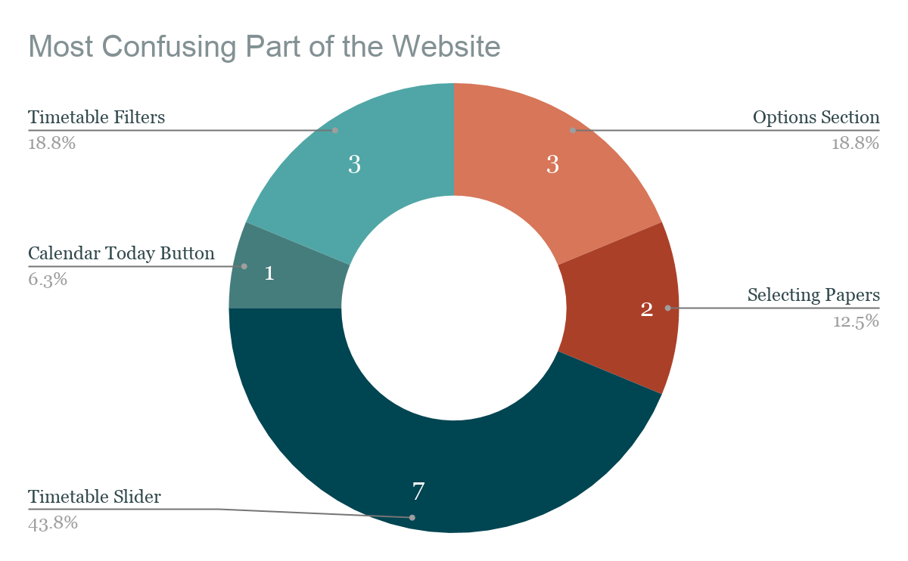
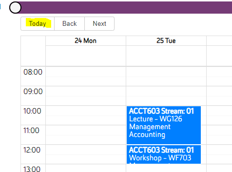
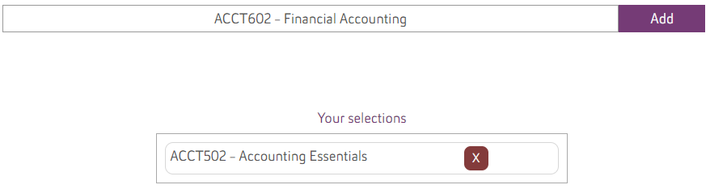
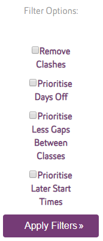
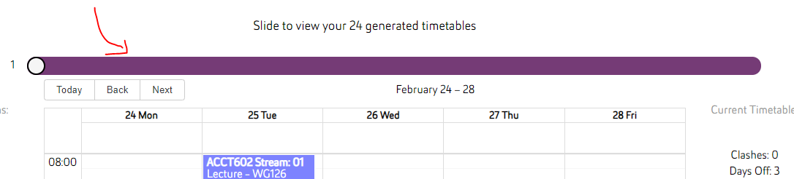
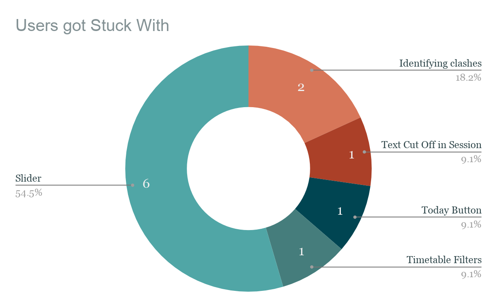
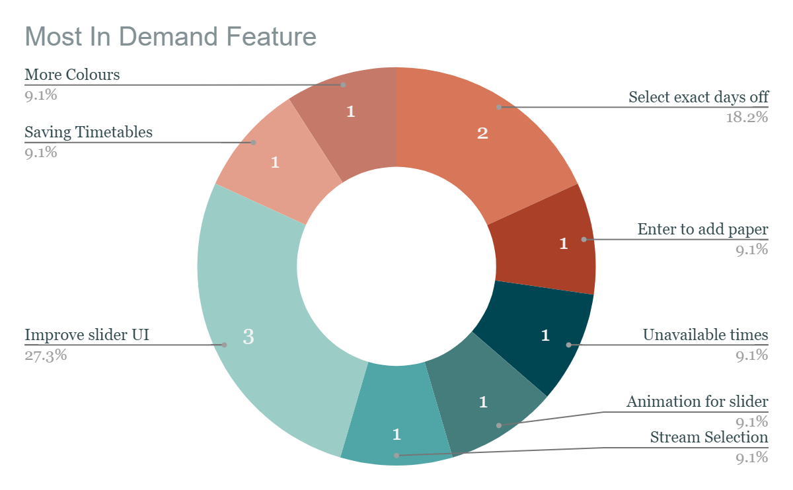

The following section will analyse the results from the data collected. Charts will be used to help illustrate where appropriate.
The first question we will analyse asked participants what they saw as the most difficult or confusing parts of the website.
The chart shows the common themes that the participants identified as difficult or confusing. We will start by discussing the less notable points first and then move to the most notable points based on how many times the same theme was occurring.
One participant identified the today button on the calendar view to be confusing as when this button is pressed, the calendar is moved to today’s date, this is very far away from where the timetables are and for a user to fix this they would need to skip through all the weeks to find the semester they are planning. This button serves no purpose within the app and is a serious flaw as it leaves users very confused.
Two of the participants identified the paper selection section as an area of difficulty. By looking further into the raw data we can see that one of the complaints was that, when searching for a paper, the enter key does not automatically add the paper to the selected list. The participant believes that the enter key should have this functionality. The other participant thought there should be more labels as some things in this area are not obvious.
Currently, the application will automatically fill out the search bar from the dropdown list when a user presses enter, but it wont add it to ‘Your selections’ automatically; they will have to manually click the ‘Add’ button on the right side of the search bar for the paper to be added correctly.
Three participants identified the options section as an area of difficulty. Of these three participants, one
said that the text of the ‘Select Filters’ button was confusing and they did not know what the button was
going to do. Another participant suggested that the label should say ‘Confirm’. The last said that the year
and semester options looked like buttons and it could be more clear that they are dropdown selectors.
Currently, the ‘Select filters’ button and the year/semester selections look very similar in styling, so
this could be the cause of confusion between differentiating what users can select as an option and how to
confirm these selections.
Three participants gave comments about the timetables filters section. Two of these participants said that they did not understand what the filters would do and that the text description of some filters was confusing. One other participant said that they did not see the apply button and they assumed that the filters would apply as soon as the box was checked.
Finally for this question, a total of seven participants identified the timetable slider as a point of difficulty and/or confusion. Six out of the seven points made were about the clarity of the slider, the participants did not realise that it was a slider and did not know its purpose. The other two said that the animation of the slider needed improvement.
Moving on to the second question, the aim of this question was to identify areas where users became stuck for a longer amount of time than just passing confusion. A lot of the issues that this question identified overlap with the previous question so we will only discuss the new points that have been raised.
As you can see from the graph the slider was still the biggest issue but those findings were discussed in the last section. Two of the participants identified in their post interview that they got stuck trying to tell if a timetable contained clashes. Both of these participants also made this comment while they were using the app, when they encountered the issue. The other newly identified issue is with the calendar session display. Sometimes when a paper has a long name, the content can be cut off. One participant identified this issue when asked this question. They did not get stuck because of this but as this is also and issue it was worth noting.
Another question front the post interview was asked with the aim of gaining some insight as to what the users felt the application was missing, in other words, the most in demand improvement / feature.
In response to this question, five participants identified unique improvements. The most notable of these five are the ability to save timetables and the ability to schedule personal unavailable times. Aside from those, one participant suggested that stream selection was a needed feature however they were unable to identify and therefore use the slider to look through the timetables. This would mean that they did not understand the functionality of the application but this is an issue with the slider UI, not the user. One participant said that they would like to see more colours used on the pages. Currently the entire site is themes using AUT brand colours but this could be an area of improvement.
Moving to the more common themes, two participants said they would like to be able to request exact days off. During the test we observed these participants become confused at the prioritise days off filter and stated “How do I choose Tuesday off?” This comment made by the participants could have been influenced by the scenario specifying that the ideal timetable needed to have Tuesdays off, however we believe that a large number of users will be looking for a specific day off so it is a valid comment. Finally, this question also reinforces the result of the previous questions as three participants said that the slider UI was the most needed improvement.
Another question asked was whether participants felt like they used all the features of the application. For this question the interviewer highlighted any of the features that we felt the participant did not use and asked why this was. This gave us the opportunity to identify features that are not very obvious to users. Six participants were observed to not have used the timetable filters. During the observation we noted that some of them used the slider without filters instead of filtering the timetables before using the slider, they just used the slider and moved through the 54 timetables. By using the filters and removing clashing timetables they could have dropped the number of timetables down to 27. This could have made it easier for them to find an ideal timetable.
Three of the participants said they did not notice the timetable details section to the right of the calendar view. While this section is not crucial it could have assisted some of the participants in identifying that a timetable contained clashes. This section details some metrics that are used by the timetable filters. Finally, one participant noted that they did not notice or use the slider, this has been discussed in the previous sections.
This section will briefly detail the UI and usability flaws that were identified in the STG application. Some suggestions will be provided that may aid in the further development. The suggestions are based on comments made by the participants of the study. The identified issues are ordered with highest improvement value first.
The slider was identified as the largest issue with the current application, a majority of participants said it was confusing or not obvious as to its function. However, they also stated that the functionality was very useful once they understood its purpose. Because of this, our recommendation is that the UI of the slider be adjusted to make it more prominent on the page. The section of text above the slider should also be made larger so that it attracts the attention of the user.
The first section of the generator page, the options section was identified as an area that needs improvement. Some participants stated that this section was unclear and mildly confusing. We suggest that some headings are added which detail the purpose of the section as well as adding small arrow indicators to the drop down selectors so that they can be identified for what they are using commonly used UI attributes. Additionally, the select filters button should be renamed to “Confirm” or some other more obvious name.
The timetable filters were found to be both confusing and not obvious by multiple participants. We suggest that the individual filters be renamed with clearer titles, the apply button be removed and instead have the filters apply as the checkboxes are selected, and finally, the filters could be moved to above the calendar view so that users are aware of it sooner.
The timetable details section was also found to be confusing or not obvious by some participants. Because this section is not crucial to the application, it is recommended that it be reviewed and potentially removed. The current main advantage of this section is that it lets users know if a timetable contains clashes, however this could be achieved using a message that appears in a more prominent place or recolouring clashing sessions in a high contrast colour, e.g. red.